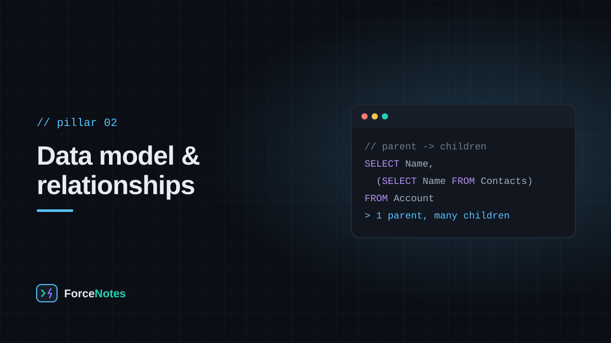

Objects rarely stand alone. How you connect them — Lookup or Master-Detail — decides what happens on delete, who owns what, and whether a roll-up summary is even possible.

Almost every Salesforce data model reduces to the same shape: a parent record with several kinds of child records hanging off it. An Account is the hub; Contact, Opportunity, and Case are typically its children. Once you can see that shape, unfamiliar objects stop being scary — you're just asking "what's the parent here, and what are the children?"
Both relationship types link one object to another, but they encode very different intent.
Rule of thumb: reach for Master-Detail when the child record has no meaning independent of its parent (like a line item on an invoice); reach for Lookup for everything else.
One object often needs to support more than one business process. A Case object might need a different set of picklist values and a different layout for a billing dispute versus a technical support ticket. Record Types let a single object branch into different picklist value sets and different assigned Page Layouts, without duplicating the object itself.
Rather than clicking through Object Manager one object at a time, Schema Builder renders your org's objects and their relationships as an interactive diagram — the fastest way to actually see the shape you've been reading about here, and a good first stop in any unfamiliar org.